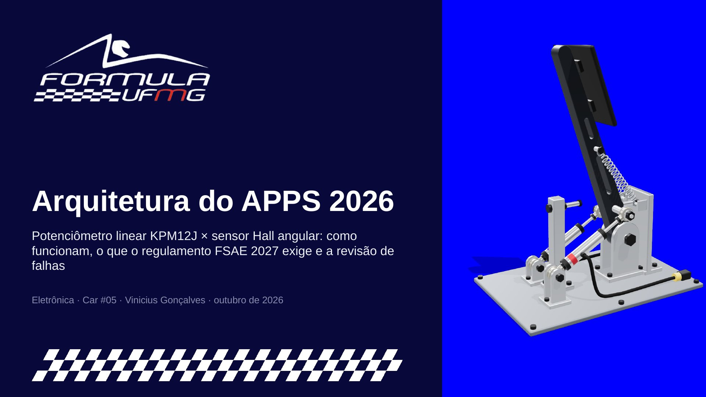

Duas arquiteturas candidatas para o sensor do pedal do acelerador. Escolha uma opção:
Pedal com sensor Hall
Abrir em tela cheia ↗Dois sensores Hall fixos, um em cada garfo do pivô, leem o ângulo de um ímã que gira com o eixo do pedal.
- Sem bielas. O eixo é travado no braço por um pino e gira em buchas. Cada ponta do eixo leva um ímã diametral, e o CI Hall fica parado na frente dele, a cerca de 1,5 mm.
- Lê o ângulo do campo. O CI mede a direção do campo do ímã. Não há contato, então não há desgaste.
- Giro espelhado. Cada sensor olha de um lado: um vê o ímã girar no sentido horário e o outro no anti-horário. Por isso o sentido de leitura (DIR) é programado diferente em cada CI.
- Sinais diferentes por programação. O zero e a faixa de cada CI são programados para dar inclinação e offset diferentes, como pede a regra T.4.2.3.
- Ponto de atenção. Com 20° de curso, cada 1° de folga do ímã vira 5 pontos percentuais de diferença entre os sensores. O ímã precisa estar travado no eixo.
No modelo: arraste para girar, use o controle de curso e os botões de vista dos sensores, e simule falhas no painel. Os valores de tensão são ilustrativos; as funções de transferência revisadas estão na apresentação.
Pedal com potenciômetro linear (KPM12J)
Abrir em tela cheia ↗Dois potenciômetros lineares KPM12J, um de cada lado, funcionam como bielas entre o braço do pedal e a base.
- Sensor como biela. Uma ponta fica presa no braço e a outra num garfo fixo na base. Quando o pedal gira, a distância entre as rótulas muda e o cursor do sensor se desloca.
- Quase linear. Com a biela perpendicular ao braço no meio do curso, o curso no sensor é ≈ 2·r·sen(Δθ/2), e o erro em relação ao ângulo fica em torno de 0,1%.
- Sinais diferentes pela geometria. Cada sensor é preso a um raio diferente do pivô, então cada um tem uma inclinação própria.
- Rótulas nas duas pontas. O sensor só trabalha na direção axial, sem carga lateral. Batentes e molas ficam no pedal, nunca no sensor.
No modelo: arraste para girar, use o controle de curso ou a animação e acompanhe as tensões no painel. Os valores de tensão são ilustrativos; as funções de transferência revisadas estão na apresentação.
Apresentação
Baixar .pptxArquitetura dos sensores, regulamento FSAE 2027 e revisão de falhas.

1 / 13
Documento PDF
PDF ainda não adicionado
Coloque o arquivo em pdf/documento.pdf e faça o commit. Esta seção passa a mostrar o documento automaticamente.